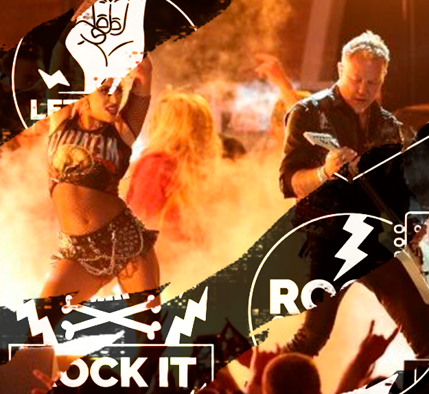

O que é o Heavy Metal?
Baseado no hard rock, o heavy metal (ou apenas metal) se desenvolveu no fim dos anos 60 e início dos anos 70. É conhecido por ser um som mais pesado, com guitarras distorcidas e densos sons de bateria e baixo. Posteriormente, foram surgindo diversos outros subgêneros do metal, como o trash metal e o glam metal. Alguns representantes do heavy metal são Iron Maiden, Motörhead, Metallica e Judas Priest.